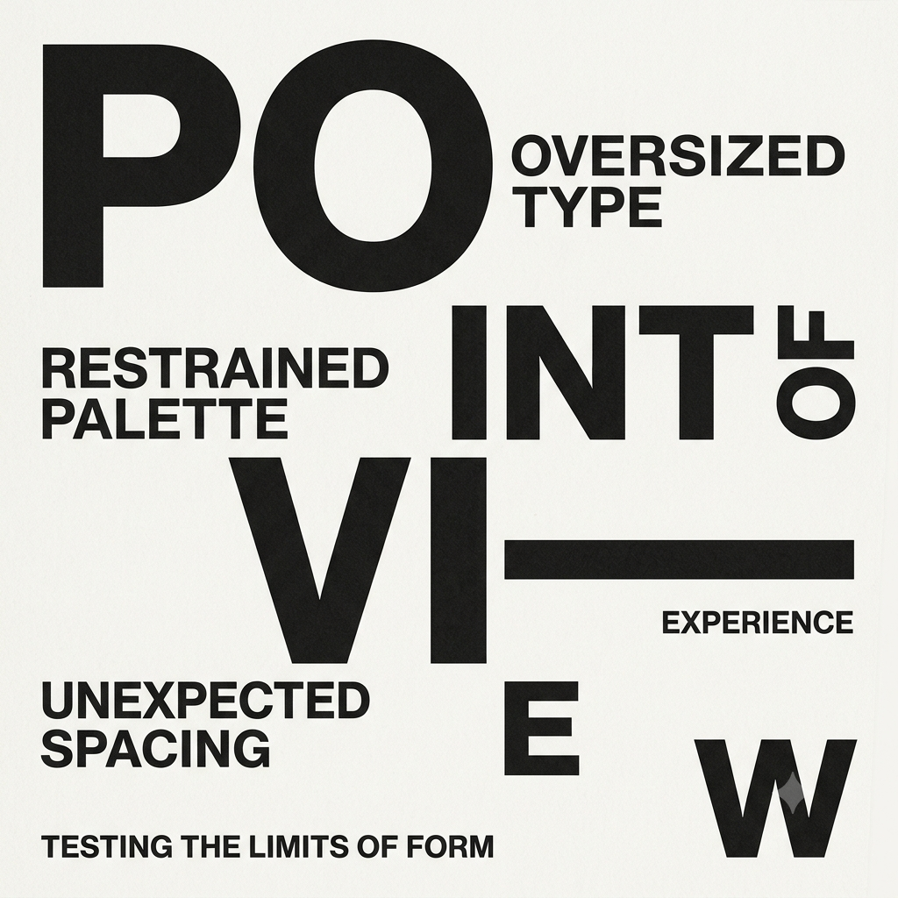

OPTIONAL IMAGE · assets/lab-type.jpgSTUDY NO. 001TYPEHAS
FEELING.✳FORM / RHYTHM / SPACE
01 — VISUAL STUDYEXPLORING
Type with a point of view.
Testing how oversized type, restrained palettes, and unexpected spacing can make a simple page feel like an experience.